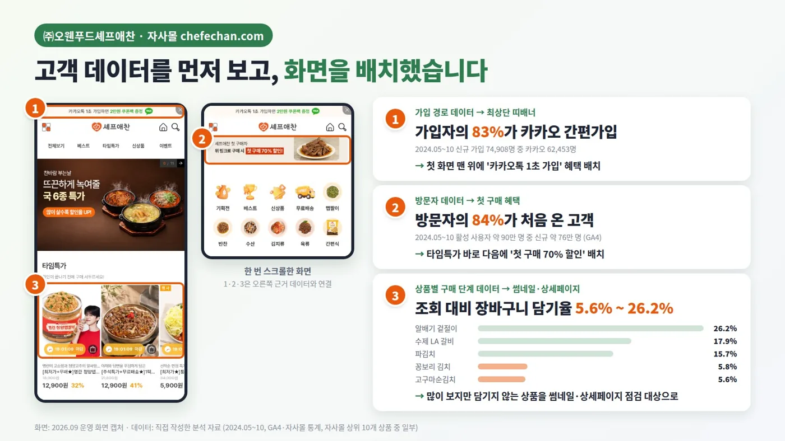
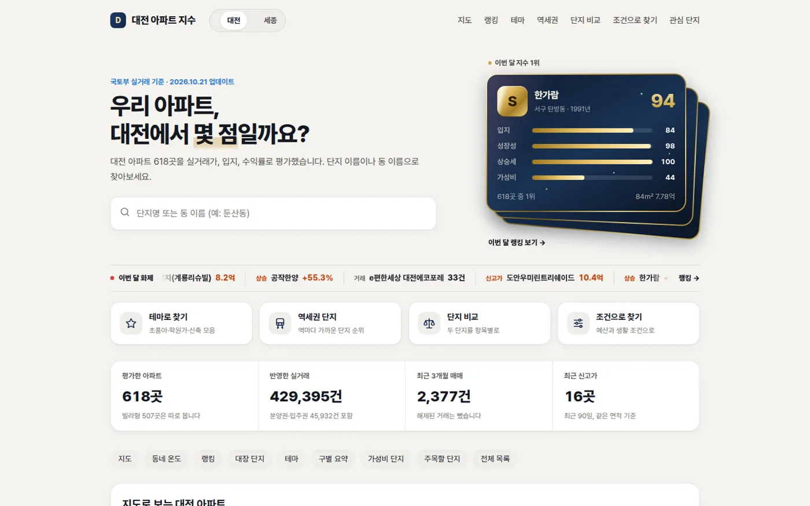
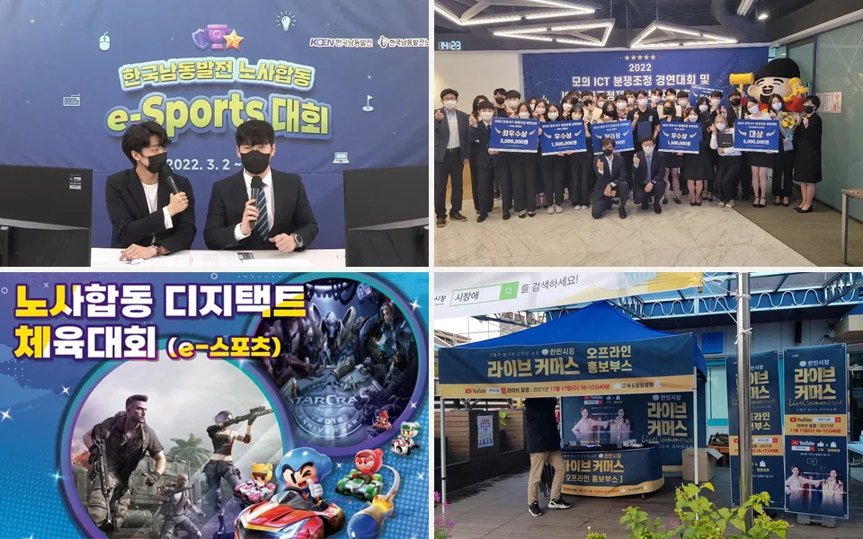
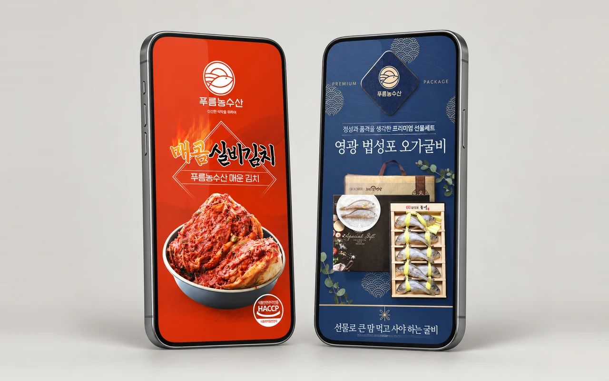
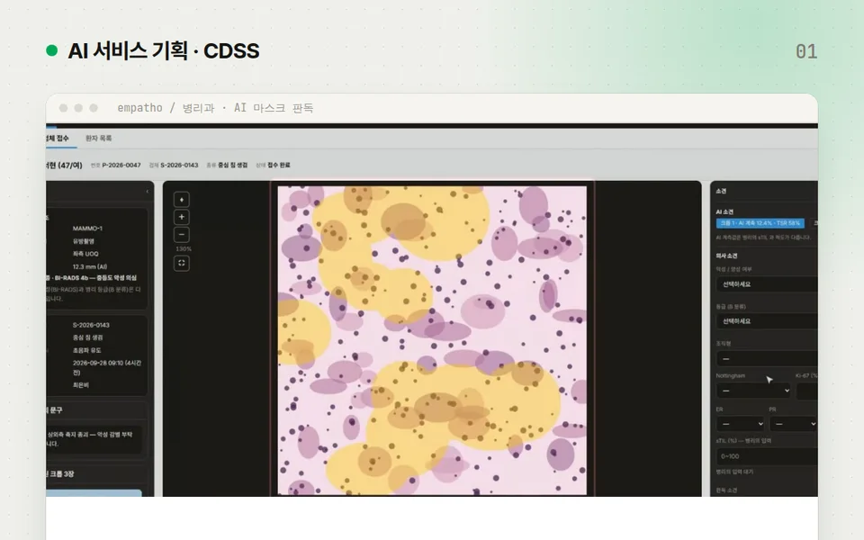
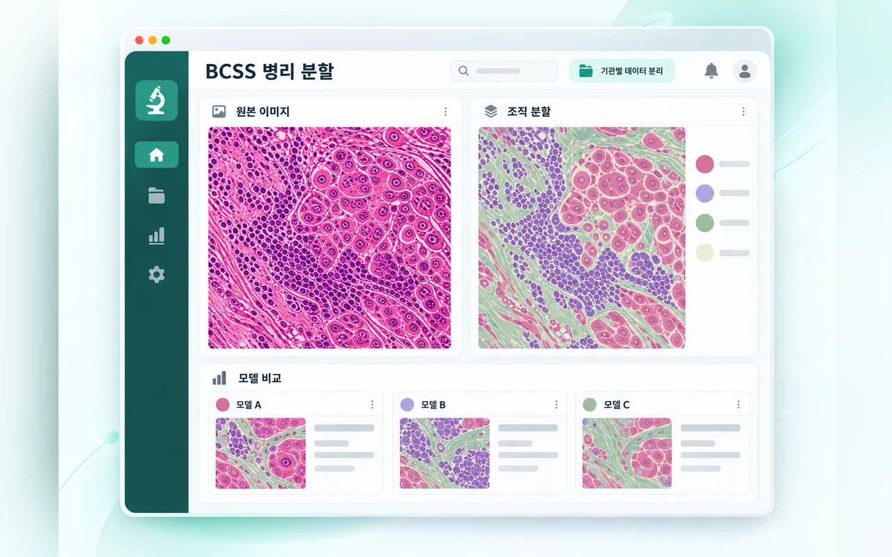
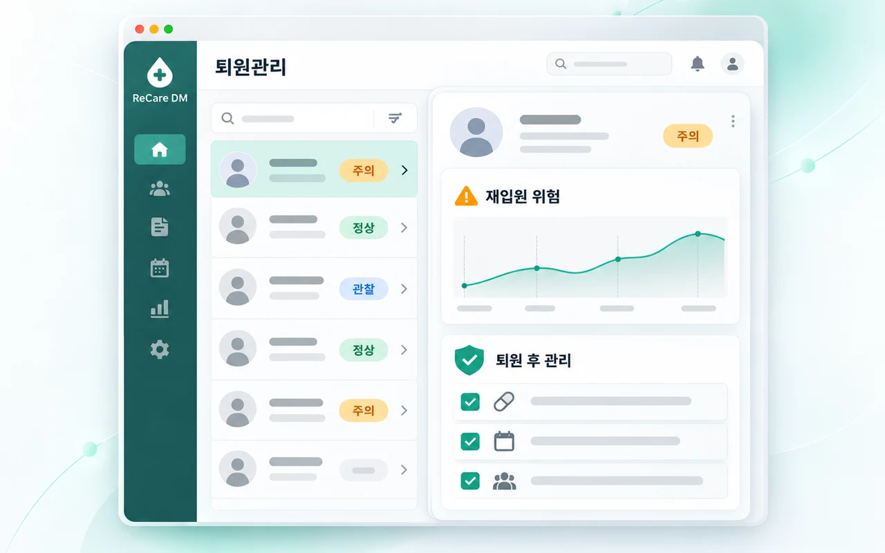
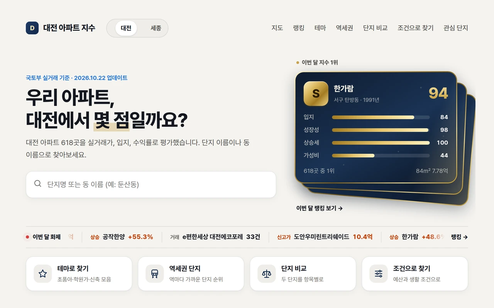
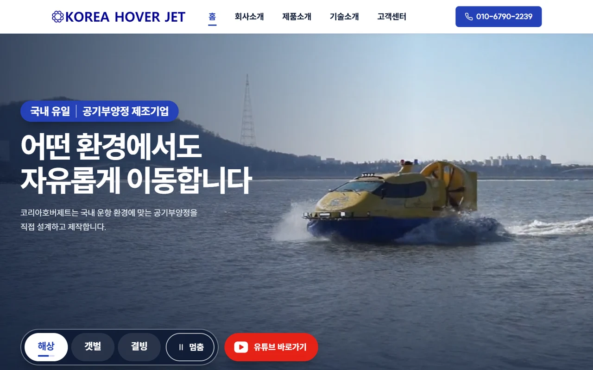

2021.05–2023.08
콜라보에어 선임연구원 · 팀장
공공기관 국가사업을 제안서 작성부터 수주, 운영, 결과보고까지 맡았고, 농수산물 커머스 신사업도 시작했습니다.
11개 기관과 협의해 국가사업 5건을 수주했고, 수주한 사업의 재계약률은 100%였습니다. 판매 상품 2개는 쿠팡 검색 키워드 1위에 올랐습니다.


사업 사진 출처: 콜라보에어 포트폴리오 collaboair.com ↗
국가사업 케이스 보기 →5년간 고객 행동 데이터를 바탕으로 구매 경험과 마케팅 성과를 개선했습니다. 이후, AI 분석 결과가 실제 서비스에서 활용되도록 기획하고 구현했습니다.
명함을 클릭하면 연락처를 볼 수 있습니다.
커머스 기획과 마케팅을 시작으로 의료 AI와 웹 서비스 구현까지 업무 범위를 확장했습니다.
공공기관 국가사업을 제안서 작성부터 수주, 운영, 결과보고까지 맡았고, 농수산물 커머스 신사업도 시작했습니다.
11개 기관과 협의해 국가사업 5건을 수주했고, 수주한 사업의 재계약률은 100%였습니다. 판매 상품 2개는 쿠팡 검색 키워드 1위에 올랐습니다.
사업 사진 출처: 콜라보에어 포트폴리오 collaboair.com ↗
국가사업 케이스 보기 →크몽에서 판매할 서비스 4종을 기획하고 상품 구성과 검색 노출을 관리했습니다.
크몽 3개 부문에서 1위를 기록했고, 창업 3개월 차 순매출은 2,000만 원이었습니다.
가입·방문·클릭 데이터를 기준으로 자사몰 화면과 광고·이벤트를 개선했습니다.
재직 기간 동안 자사몰 회원은 53만 명 늘었고, 매출은 5배, 광고 ROAS는 450%에서 600%로 높아졌습니다. 팀 전체의 성과입니다.


데이터 분석과 AI 모델을 서비스에 적용하는 과정을 배우며, 최종 프로젝트 EMPATHO의 기획과 화면·서버 구현을 맡았습니다.
6개월 동안 팀 프로젝트 6개를 수행했고, EMPATHO로 팀과제 우수상을 받았습니다.

기획안을 실제 서비스로 구현하는 경험을 이어 가고 있습니다.


문제와 역할이 다른 프로젝트를 핵심 결과 중심으로 정리했습니다.
문제 정의 · 범위 · 의사결정
유입 · 전환 · 재방문
정보 구조 · 화면 구성
기능 구현 · 운영 자동화
분석 · 모델 검증

고객 행동 데이터로 메인 화면을 개선하고, 소재 테스트 결과에 따라 광고 예산을 조정했습니다.

공공기관 행사·홍보 사업의 제안부터 운영, 결과보고까지 맡았으며 일부 행사의 진행도 담당했습니다.

산지 업체 발굴부터 가격과 판매 페이지 설계까지 신규 커머스를 구축했습니다.
서비스 4종을 기획하고 상품 구성과 검색 노출을 관리했습니다.

유방암 검진 지원 서비스
과별로 흩어진 영상·병리·진료 기록을 병변 단위로 연결하고, 의료진이 AI의 근거와 신뢰도를 확인할 수 있도록 설계했습니다. 병리 판독에서는 판독문과 화면 수치가 서로 다른 마스크에서 계산되던 원인을 찾아 계산 경로를 하나로 통합했습니다.
환자의 검진 경험에서 시작해 EMPATHO의 핵심 기능으로 이어지는 30초 영상을 제작했습니다.

병리 이미지를 출처별로 나누고, 3개 AI 모델의 성능을 비교했습니다.

재입원 환자를 놓치지 않는 데 초점을 맞춰 평가 지표를 정하고, 결과를 퇴원관리 화면에 연결했습니다.

공공데이터를 정제해 대전·세종 618개 단지의 가격, 입지, 수익률을 비교하는 서비스를 만들었습니다.

게시판 중심의 기존 사이트에서 기업의 기술력과 전문성을 강조하고, 제품 라인업과 핵심 기술, 활용 분야를 체계적으로 구성했습니다.
결과보다 그 결과를 만든 기준이 드러나는 결정만 골랐습니다.
비슷한 정보를 담은 세 메뉴를 "주요 실적"으로 합쳐 탐색 경로를 줄였습니다.
자세히 보기 →한 건의 특이 거래가 가격을 왜곡하지 않도록 중위가격을 사용하고, 거래가 2건 미만이면 점수를 표시하지 않았습니다.
자세히 보기 →과거 기록을 나중에 되살릴 수 없는 기능은 먼저 만들고, 결제 같은 운영 기능은 다음 단계로 미뤘습니다.
자세히 보기 →결과값만 맞추지 않고 두 결과가 같은 마스크 생성 함수를 사용하도록 구조를 바꿨습니다.
자세히 보기 →다른 모델이 실행된 경우 정상 결과처럼 표시하지 않고 오류 원인을 보여 주도록 했습니다.
자세히 보기 →위치별 클릭 데이터를 비교해 성과가 높은 구좌에 전환이 좋은 상품을 배치했습니다.
자세히 보기 →서비스 기획 · PM/PO · AI 서비스 기획 포지션을 찾고 있습니다.
대전·세종 또는 원격 근무가 가능합니다.